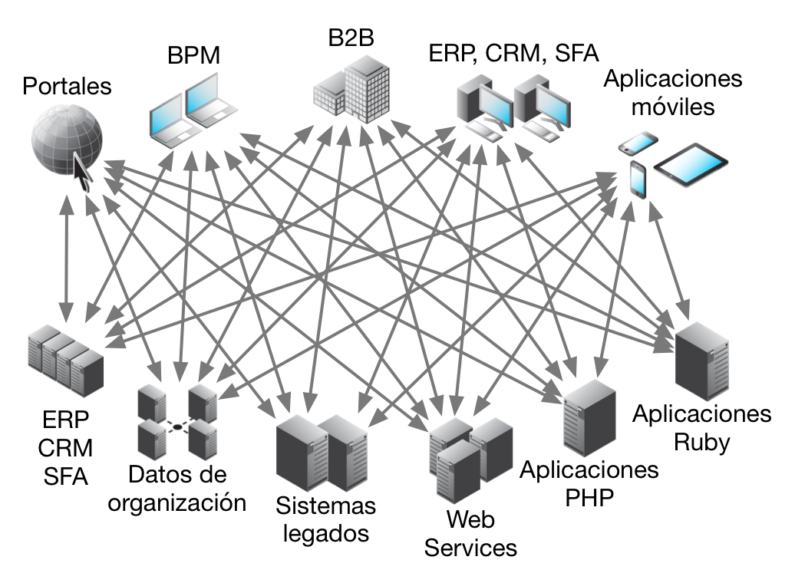
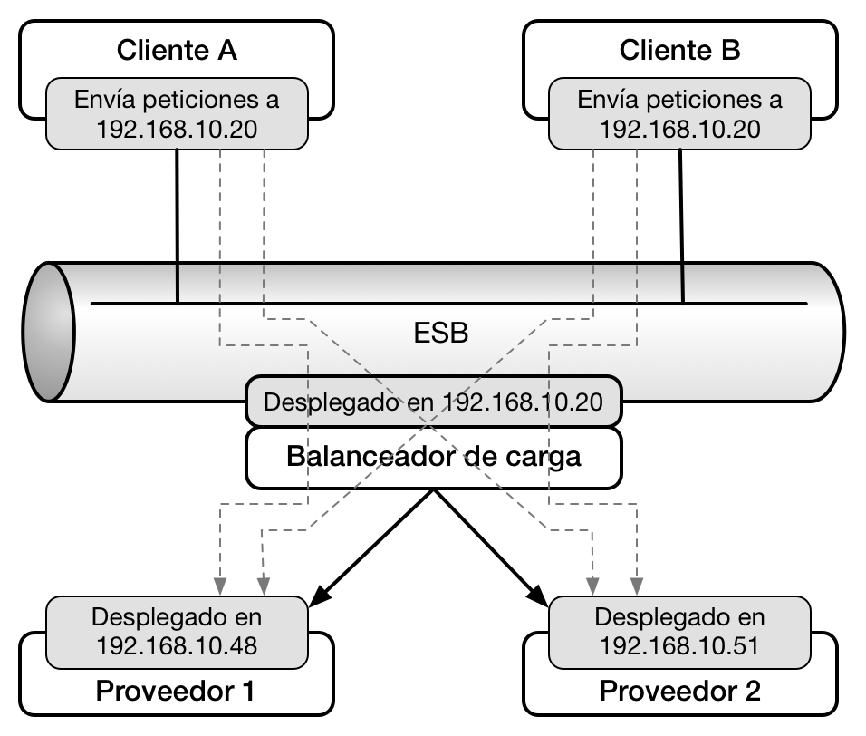

Rediseño de la nube de servicios de la UNLP
Tesina de grado de la Licenciatura · Facultad de Informática
Autores: Miguel Carbone & José Nahuel Cuesta Luengo
Directoras: Claudia Banchoff Tzancoff & Claudia Queiruga
Asesor Profesional: Christian Adrián Rodriguez
Objetivo
Objetivo
- Proponer un nuevo diseño para la arquitectura de la nube de servicios de la UNLP.
- En base a nuestra experiencia y la investigación realizada en la materia.
-
Principios:
- Escalabilidad
- Redundancia
- Desacoplamiento
- Simplicidad
- Estandarización
Contexto
¿Qué es la nube de servicios de la UNLP?
- Servicios web que proveen información común a distintas aplicaciones.
- Una sola aplicación monolítica, altamente acoplada.
- Interfaz REST-like.
- Datos de referencia: tipos de documento, géneros, estados civiles, países, provincias, partidos y localidades, Unidades Académicas.
- Información académica: carreras, planes de estudios, materias, títulos otorgados.
- Sobre las personas vinculadas a la UNLP: alumnos y personal.
- Sobre los cargos del personal de la UNLP: docentes, no docentes y autoridades superiores.
Breve historia de la nube de servicios
- Iteración 0: Aplicaciones aisladas.
- Iteración 1: Eliminación de repetición y normalización de datos
- Iteración 2: Fuentes de datos dinámicas.
- Iteración 3: Unificación del acceso y desacoplamiento de componentes.
Marco teórico
SOA / Microservicios
Enterprise Service Bus (ESB)
- DESCRIPCIÓN: ¿QUÉ GAROMPA ES?
- Proveer interoperabilidad y desacoplamiento.
- Transformar la información.
- Routing inteligente.
- Seguridad.
- Fiabilidad de servicios.
- Administración de servicios.
- Monitoreo y registro de actividades.
Interconexión punto a punto
Interconexión con ESB mediador
Tecnologías analizadas
Para los servicios
 Ruby on Rails
Ruby on Rails
|
Sinatra |